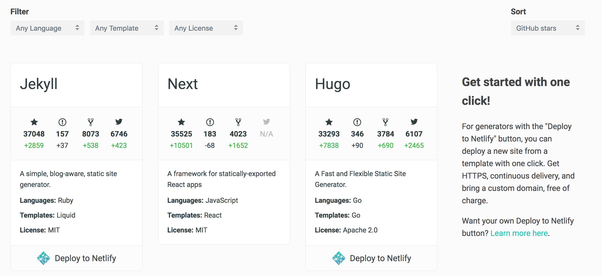

什麼是靜態網站 (Static Site) 與 靜態網站產生器 (Static Site Generator)
Posted on Mon 28 January 2019 in 靜態網站
而如果你的網站只是要單純呈現內容與介紹資訊為主，那麼你的網站可能有單純的靜態內容，此時我們也稱這類型的網站為 靜態網站 (Static Site)，此時你可以考慮使用 靜態網站產生器 (Static Site Generator) 來製作。
那麼什麼是 靜態網站 (Static Site)，什麼又是 靜態網站產生器 (Static Site Generator) 呢？
以下我們就來談談與介紹。
前言
當我們要架設一個網站時，一定或多或少會去想一下，這個網站是什麼用途，要怎麼架設與架設在哪裡。
而如果你的網站只是要單純呈現內容與介紹資訊為主，那麼你的網站可能有單純的靜態內容，此時我們也稱這類型的網站為 靜態網站 (Static Site)，此時你可以考慮使用 靜態網站產生器 (Static Site Generator) 來製作。
那麼什麼是 靜態網站 (Static Site)，什麼又是 靜態網站產生器 (Static Site Generator) 呢？
以下我們就來談談與介紹。
靜態網站產生器 (Static Site Generator)
要談到「靜態網站產生器」，需要先分別介紹何謂「靜態網站」、「內容管理系統 CMS」。
靜態網站 (Static Site)
雖然英文是寫 Static Site，但是其實這裡的 Site 是指 WebSite ，一般所謂的靜態網站通常是指該網站的網頁與資料組成都是以 HTML/CSS/JS 檔案組成。
除此之外，像是能有資料庫儲存，或是其他複雜功能如會員功能、用戶登入、發布文章，或是如購物結帳刷卡等功能，由於都是透過後端語言（諸 PHP, Ruby, Python, Java, Node.js, C# ...等等）完成的，因此也不是靜態網站能做到的事情。 通常具備上述這些特色的都稱動態網站。
所以像是一般耳熟能詳的 Wordpress 因為具備後台編寫、會員購物車等擴充功能、使用 PHP 語言，需要資料庫等條件，就不屬於靜態網站，而是所謂的動態網站。
內容管理系統 (CMS)
內容管理系統可以新增、編輯與發佈內容文章外，也能透過目錄與標籤等功能協助分類管理，並能選擇主題來呈現不同的外觀，如 Wordpress ，通常內容管理系統會透過後端程式語言與資料庫來建置與運作。
然而上述的內容管理系統(CMS) 正需因要有資料庫與後端語言搭建的服務，因此在建置與使用上需要額外花些時間學習與維護，也有不好遷移或轉移到不同的 CMS 管理系統，因此才有了靜態網站產生器的出現。
靜態網站產生器 (Static Site Generator)
靜態網站產生器一樣擁有能做到新增，編輯與發佈文章，也能標籤與分類管理或更換主題樣式，但是這一切只要由 Markdown 格式的檔案編寫，再透過產生器產出只需要 HTML/CSS/JS 檔案組成靜態網站即可，因此所有的文章都只要以 Markdown 格式的檔案保存在目錄即可，也能直接編輯，在透過產生器自動建置產生即可。
使用靜態網站的優點
優點
操作簡單
你不需要學習後端程式語言，學習資料庫語法，或是複雜的架設伺服器等方式，你只需要 HTML / CSS 或是許多靜態網站的工具會使用 Markdown 語法撰寫，因此非常快上手。
快速
因為靜態網站的內容都是 HTML/CSS/JS 等檔案，所以不需要有資料庫，也不需要從資料庫查詢資料，也沒有伺服器做請求，頁面也不用樣板渲染，因此速度上會非常快速。
安全
你不用擔心伺服器與資料庫被攻擊，因為你只有前端的靜態檔案，而且這些檔案因為是 HTML 所以你再架設時的內容自然都是對外的資訊。
便宜
因為不用架設資料庫，也不用架設動態網站所需要的伺服器，所以擺設你的靜態網站檔案的主機費用可以很低，甚至有許多的服務提供免費的架設，如 Github Page。
缺點
功能極度受限
因為是靜態網站，只有 HTML/CSS/JS，所以能做的事情非常受限，例如沒有辦法製作會員功能，提供註冊、登入與登出，沒有辦法輸入資料保存，也沒有辦法提供像是購物、刷卡等功能等等；靜態網站只能拿來以顯示內容為主，加上一些簡易的網頁前端的動態效果（如漸層、滑動...等等）。
沒有 real-time content
因為都是靜態的內容，所以也沒會有自動出現或產生的內容存在，不像一般的網站可以在網頁上新增、編輯或刪除內容。
何時選擇使用靜態網站
若你的網站只要呈現個人的基本資訊作為履歷，或是以呈現、寫文章 Blog 等內容為主，那麼可以選擇使用靜態網站來快速建置達成你的蜜標。
如何選擇靜態網站產生器
雖然靜態網站產生器都有 CMS 的功能，不過在預設的用途定義上還是有些區分，例如有些是用在專案的文件製作，而有些是以網誌為主自己選擇由熟悉，有些除了 Markdown 外還支援別的格式編寫，或是有其他的功能特色，如回覆留言，RSS 訂閱，Google Analytics ..等。
並且產生器所使用的程式語言都不太相同 (e.g: Ruby, Node.js, Python, PHP ...)，因此會建議參考 StaticGen 網站來選擇，並對每一個靜態網站研究。
